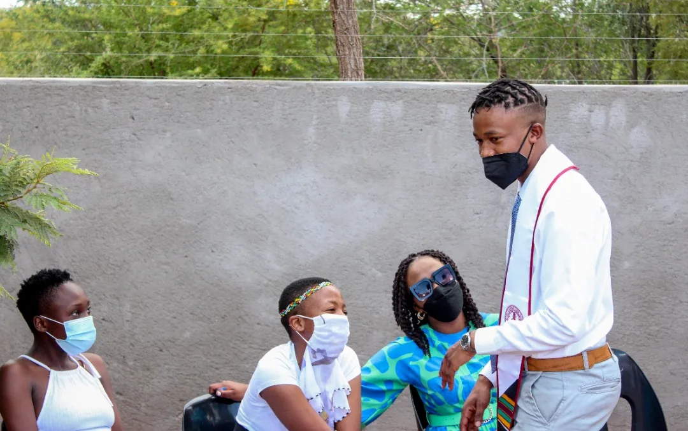

Live → Blog
January 25, 2022

Autumn is a period of harvest, a season to reap the rewards of our labor. The highlight of my autumn was an unexpected trip to Botswana, where I was met with celebration. After over two decades toiling in school, my community had gathered to mark the end of a journey - my graduation from graduate school. I also got to hop over to Canada on a little getaway with the madam, then wrapped up the year with a lot of dinner parties and abundant libations. It is fair to say, in gratitude to all that my soul holds holy and divine, it was a plentiful harvest this past year! Now onto the seasonal updates per pillar of my life priorities.
Personal Development: This fall I was confronted with questions regarding the integrity of my conception of self. Following the completion of my first memoir, I found myself reflecting on the meaning of home as a spiritual concept. What does it mean to be home in a place, in the presence of others, and in a time period? Greater still, what does it mean to be at home within oneself? I learned that although I have graduated from regular visits to my therapist, the journey of healing is not one that ends. I was reminded that I will continue to relapse back to behavior patterns that do not serve the person I am trying to be, but that in those moments I will need to love myself harder and extend myself enough compassion to remember that I will fall short, but I should always keep trying. I am thankful to the Homecoming Podcast with Dr Thema for continuing to provide reflection points and prompts as I continue on this journey of healing.
Meaningful Communities: Being in Botswana amongst my community, the reflection on the idea of home as a place and time, and home as people continued. Driving on the left side felt unnatural, although not too long ago it was my only reality. Except for Chicken Licken, every other food that I had missed and craved for so long did not resonate the same way. The scorching sun was too unbearable and so it was clear as day that home is not necessarily a place. I was pleased, however, to realize that the presence of my friends and family quenched a certain craving for community. As such, home is definitely the people. I got to reacquaint with some of my friends, after coming to the realization that I do not know the adults they have become and they in turn do not know the man I am. To reintroduce oneself to his kin from a time and place past, and still resonate at the same frequency is a blessing. I am blessed.
While in Botswana, I paid my respects to the final resting places of my family's ancestors, whose collective consciousness continue to clear my path. I will continue to visit as often as I can because it is nurturing to my soul and spirit. The reflection on home as people continued after my return to California. Dinners I was invited to and dinners I hosted revealed to me that I have managed to build myself some community out here as well, and so in the presence of these people I feel home too. If only there could be a world where all the people I consider home could be in the same geographic location, oh that would be paradise! Perhaps when I am reunited with the collective consciousness of ancestors, outside of my physical form, then perhaps I would be truly home within myself and with my community.
Professional Excellence: Autumn at work came with performance reviews and I was beyond satisfied with mine. I had exceeded expectations. It is gratifying to know I am doing a great job and adding value to the work that my team does. How did I get lucky to start my working life with my dream job? I am doing great things working on cutting edge technology, in a company that has a great culture, and learning a lot. The thing that excited me the most from my performance review meeting was all that I still have to learn. When next autumn comes through, "there is a million things I haven't done, just you wait..." Outside of performance reviews, I started in a new role at the company and I am proud of the way I have helped shape the position. More importantly, I am impressed by how Management Science and Engineering prepared me for this job - even the classes I thought were fuzzy and not as important, like Leading Organizational Change. I am thankful.
Financial Sustainability: Well the holiday season is an enemy of financial progress, am I right? This is perhaps the one pillar where I am performing below targets. While I will continue to prioritize spending on experiences that enable me to reparent myself, I will otherwise be very frugal in 2022 as I return to compliance with my established financial standards on spending, saving, and investing. This is necessary also because 2022 is important for some personal projects that are capital intensive. During this period of austerity, Personal Development shall remain at Priority 1 spending level while Professional Development and Meaningful Communities shall be assigned to spending level Priorities 4 and 5, respectively. After all, one cannot pour from an empty cup, right?
In conclusion, fall was great and had abundant blessings. But there is a need for better stewardship on my part. Here is to a great winter season and the rest of the new year. Until the next update, remember to stay hydrated and mind your business.
← Return to Blog